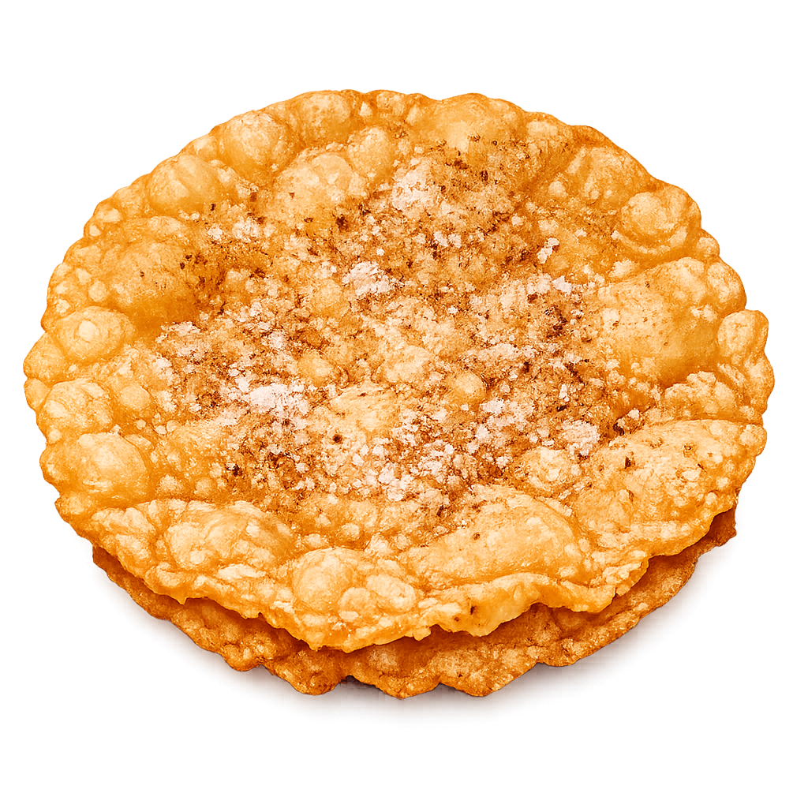

Una masa ultra delgada, frita a la perfección dorada y espolvoreada con azúcar y canela.
Un buñuelo siempre viene bien, son redondos y crujientes, si quieres el tuyo haz un pedido.

Nacieron en la cultura árabe medieval y viajaron hasta el corazón de México.
Toca los círculos naranjas en el mapa para descubrir su historia.
Hechos al momento, crujientes, con receta secreta de la casa y sin conservadores.
Nuestros buñuelos se preparan bajo pedido diario, garantizando que te lleves un producto crujiente, calientito y con ese inigualable sabor familiar que las marcas de bolsa nunca podrán replicar.